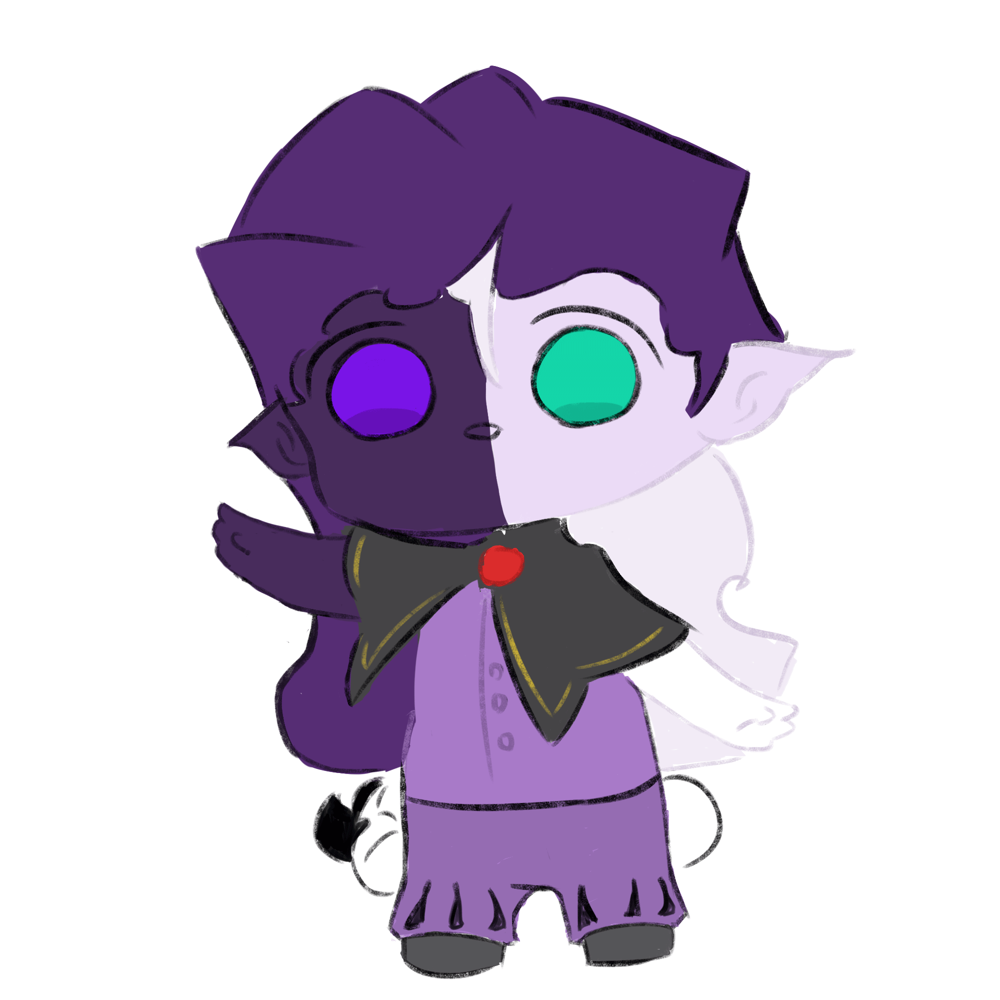

Графічний дизайн включає в себе безліч стилів, які використовуються для передачі ідей, емоцій та інформації через візуальні елементи. Ось декілька популярних стилів у графічному дизайні:
Мінімалізм:
Цей стиль характеризується простими формами, обмеженою палітрою кольорів і малою кількістю елементів. Мета мінімалізму — досягти максимального ефекту з мінімумом засобів.
Ретро:
Стиль, який черпає натхнення з минулих десятиліть (1950-1980-ті роки). Використовуються яскраві кольори, вінтажна типографіка та графіка, яка нагадує про старі часи.
Типографіка:
Окремий вид дизайну, де акцент робиться на виборі шрифтів та їх комбінування. Використовується для передачі настрою та стилю через текст.
Абстрактний:
Цей стиль передбачає використання форм і кольорів, що не обов'язково мають конкретне значення. Абстрактний дизайн може розвивати уяву і емоції, залишаючи багато простору для інтерпретацій.
Гранж:
Стиль, що характеризується немаркітною естетикою, часто включає текстури, плями, нерівні лінії та темні кольори. Використовується для створення відчуття бунту чи неформальності.
